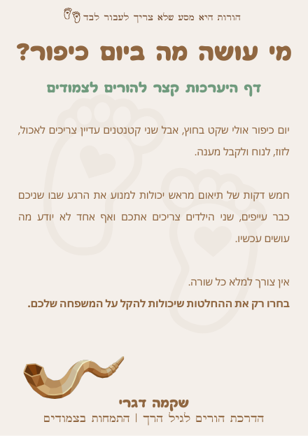

יום כיפור עם צמודים: 5 דברים שכדאי לסגור מראש
יום כיפור אולי שקט בחוץ, אבל בבית עם צמודים הוא לא בהכרח יום שקט.

הרחובות שקטים, אין מסגרות והקצב בחוץ משתנה. אבל שני הילדים מתעוררים בבוקר עם אותם הצרכים: לאכול, לזוז, לשחק ולקבל מענה.
יכול להיות ששניכם צמים, שרק אחד מכם צם או שאינכם צמים.
יכול להיות שתכננתם לצאת עם הילדים לרכוב, אבל אחד מהם כבר עייף והשני רק רוצה להמשיך.
ובתוך היום הארוך צריך לדאוג לארוחות, לשמור על עוגנים מהשגרה וגם למצוא רגע לנוח.
ואז אתם עלולים למצוא את עצמכם נקרעים שוב ושוב בין שני צרכים - אם יוצאים לרחוב, אחד רוצה להמשיך והשני כבר מבקש ידיים. אם חוזרים הביתה, אחד זקוק למנוחה והשני משתעמם. ואם אחד ההורים מנסה לנוח, ההורה השני נשאר לבד עם שניהם.
כל בחירה יכולה להרגיש כאילו היא באה על חשבון ילד אחר. אתם ממשיכים להגיב למה שקורה, לנחש מה יעזור ולקוות שהרגע הבא יהיה קל יותר.
הקושי הוא לא שאין לכם תוכנית מושלמת.
הקושי הוא להעביר יום שלם בתחושה שאתם רק מכבים שריפות, ולסיים אותו עייפים עם המחשבה שאולי הייתם צריכים לפעול אחרת.
כמה החלטות קטנות שתקבלו מראש יכולות לשנות את התחושה בתוך היום הזה.
לא מפני שהכול יתנהל כמתוכנן, אלא כי ככל שיש לכם יותר בהירות לגבי מה לעשות, יש בבית פחות צעקות, פחות ניחושים ופחות אשמה בסוף היום.
1. החליטו איך תרצו שהיום ייראה
לפני שמחלקים תפקידים או מתכננים פעילויות, התחילו מהתמונה הגדולה.
האם תרצו להישאר בעיקר בבית? לצאת לרחוב בשעות מסוימות? לפגוש משפחה או חברים? האם חשוב לכם לשמור על זמני השינה או שהפעם מתאים להתגמש?
אין דרך אחת נכונה לציין את יום כיפור עם ילדים. התוכנית צריכה להתאים לאופן שבו אתם מציינים את היום, לגיל הילדים ולכוחות שיהיו לכם.
בחרו עוגן אחד או שניים שחשוב לכם לשמור עליהם. למשל: שנת הצהריים, ארוחה בשעה מוכרת או טקס השינה מהבית.
לא חייבים לשמור על כל השגרה כדי לתת לילדים יציבות. עוגן אחד או שניים יכולים לעזור להם בתוך יום שנראה אחרת.
2. חלקו תפקידים לפי המציאות שלכם
בין אם שניכם צמים, רק אחד מכם צם או שאינכם צמים, כדאי לדבר מראש על חלוקת היום.
בדקו מי צפוי להזדקק ליותר מנוחה, מי מוביל עם הילדים בכל חלק ביום ואיך מתחלפים כשהכוחות מתחילים להיגמר.
אם שניכם צמים, אפשר לחלק את היום למשמרות קצרות כדי שכל אחד יקבל זמן לנוח. אם רק אחד מכם צם, חשוב לחשוב גם על הכוחות של ההורה שאינו צם ולא להשאיר אותו לבד עם האחריות לשני הילדים במשך כל היום.
לא צריך לחלק הכול באופן שווה.
צריך למצוא חלוקה שמתאימה ליכולת של כל אחד מכם באותו היום.
כדאי להתייחס גם לרגע שבו הילדים צריכים דברים שונים - מי יוצא עם הילד שזקוק לתנועה ומי נשאר עם הילד העייף? מי עוזר בהרדמה ומי נמצא עם הילד שעדיין ער?
המטרה אינה לנהל לוח משמרות מדויק. המטרה היא למנוע את הרגע שבו שניכם כבר מותשים, שני הילדים זקוקים לכם ואף אחד לא יודע מי עושה מה.
מי עושה מה ביום כיפור?
דף היערכות קצר להורים לצמודים. חמש דקות של תיאום מראש יכולות למנוע את הרגע שבו שניכם כבר עייפים, שני הילדים צריכים אתכם ואף אחד לא יודע מה עושים עכשיו.
3. הכינו לילדים אוכל שקל להגיש
רוב המשפחות ממילא נערכות מראש לאוכל ביום כיפור, במיוחד כאשר צמים או נמנעים מבישול ומהדלקת חשמל.
עם שני ילדים קטנים, כדאי לחשוב לא רק מה הם יאכלו אלא גם כמה פשוט יהיה להגיש להם את האוכל ברגע האמת.
הכינו מראש ארוחות ונשנושים שלא ידרשו מכם להתחיל לחפש, לחתוך או לבשל כשהכוחות אוזלים. סדרו אותם כך שיהיה ברור מה מיועד לכל חלק ביום, ודאגו לקחת מים ואוכל בכל יציאה מהבית.
הרעב של הילדים לא תמיד יגיע בשעה שתכננתם. אוכל נגיש יכול למנוע את המפגש המוכר בין רעב, עייפות ושני ילדים שצריכים אתכם יחד.
4. תכננו את היציאה לרחוב וגם את הדרך חזרה
הרחוב הריק הוא אחד הדברים הסמלים ביום כיפור שילדים רבים מחכים להם. אבל כביש שנראה ריק אינו בהכרח כביש פנוי או בטוח.
לצד כלי רכב ורכבי חירום, נמצאים עליו גם אופניים, קורקינטים וכלים חשמליים שנעים במהירות. לילדים קטנים לא תמיד קל להעריך מאיזה כיוון הם מגיעים או באיזו מהירות.
בחרו מסלול קרוב לבית, התאימו את כלי הרכיבה לגיל הילדים, הקפידו על קסדה והשגחה וקחו איתכם מים ואוכל עבורם.
חשבו גם על הדרך חזרה - יציאה קצרה יכולה להסתיים כשאחד הילדים רוצה להמשיך לרכוב והשני כבר עייף, מבקש ידיים או אינו מסוגל ללכת.
לפני שיוצאים, החליטו כמה רחוק מתאים לכם להגיע ומה תעשו אם אחד הילדים ירצה לחזור לפני השני.
המטרה אינה לצפות כל תרחיש, אלא לא למצוא את עצמכם רחוקים מהבית, עם ילד אחד על הידיים וילד שני שמסרב לסיים.
5. החליטו מה עושים כשהם צריכים דברים שונים
אחד הילדים יכול ליהנות מהרכיבה ומהמפגש ברחוב, בזמן שהשני כבר זקוק לבית ולמנוחה. אחד ירצה להמשיך לשחק, והשני יצטרך אתכם קרובים דווקא באותו הרגע.
שוויון לא אומר ששני הילדים צריכים לעשות את אותו הדבר. הוא אומר שמנסים להבין מה כל אחד מהם צריך בתוך אותה הסיטואציה.
אפשר להתפצל לזמן קצר, אם זה מתאים לכם. אפשר לקחת הפסקה ולבדוק אם הילד מסוגל לחזור. ואפשר גם להבין שהספיק להיום ולשנות את התוכנית.
כדאי להחליט מראש מה יהיה הסימן שלכם לעצור:
- כשאחד הילדים כבר אינו מצליח ליהנות.
- כשאתם משקיעים את כל הכוחות בניסיון להחזיק עוד קצת.
- כשהיציאה כבר גובה מכולם יותר ממה שהיא נותנת.
לשנות את התוכנית לא אומר שנכשלתם.
זה אומר שזיהיתם מה המשפחה שלכם צריכה ובחרתם בהתאם.
יום כיפור עם צמודים לא חייב להתנהל בדיוק כפי שתכננתם כדי להרגיש אחרת.
הילדים עדיין עשויים להתעייף בזמנים שונים. אחד ירצה לצאת כשהשני ירצה להישאר. יהיו רגעים שבהם שניהם יצטרכו אתכם יחד.
ההבדל הוא שלא תצטרכו להתחיל לנחש בכל פעם מחדש.
כשתדעו על אילו עוגנים חשוב לכם לשמור, איך להתחלק ומה לעשות כשהתוכנית כבר לא מתאימה, תוכלו להגיב מתוך יותר בהירות ופחות מתוך הלחץ של הרגע.
במדריך מחכים לכם גם דף היערכות ובנק משפטים שאפשר לחזור אליהם לפני החג וברגע האמת.
המטרה אינה להוסיף לכם עוד משימה. אפשר לקרוא את המדריך תוך פחות משעה, לבחור מתוכו את מה שמתאים למשפחה שלכם ולהגיע לחגים עם פחות אלתורים ויותר בהירות.